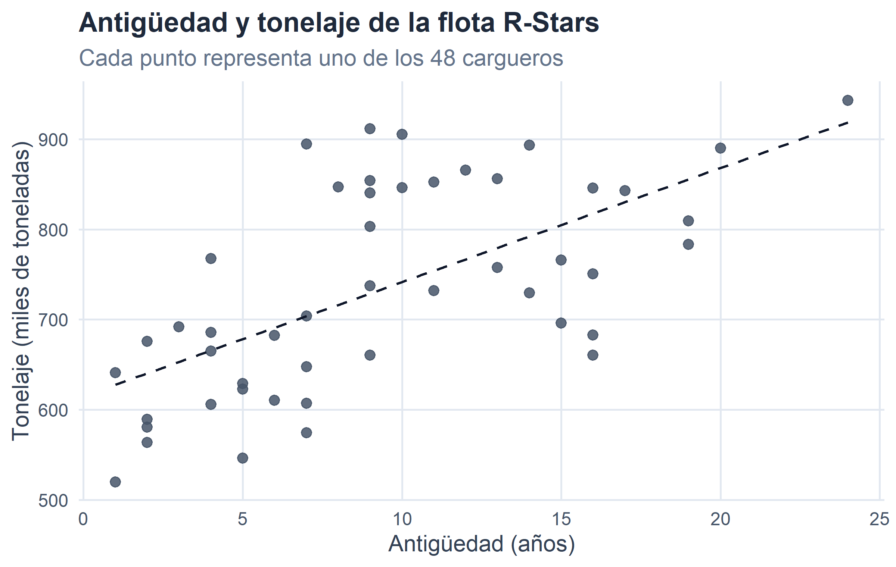

4 Variable estadística bidimensional y n-dimensional.
Figura 4.1. Cuando la información se cruza: dos variables, una historia.
En los dos capítulos anteriores hemos aprendido a describir una característica cada vez. Ese análisis univariante es el punto de partida imprescindible, pero rara vez es el objetivo final. La mayor parte de las preguntas interesantes en Economía y Empresa nacen del cruce de dos o más variables: ¿ganan más los universitarios?, ¿son las compañías más grandes también las más rentables?, ¿los cargueros más antiguos tienen más tonelaje?, ¿asocian los distintos astilleros sus bases operativas a las mismas galaxias? En todos estos casos, la pregunta no puede contestarse mirando una única variable: hace falta poner dos características simultáneamente sobre cada individuo y estudiar cómo se relacionan.
Este capítulo, y el siguiente, son el bloque del curso dedicado al análisis bidimensional (y, por extensión, \(n\)-dimensional). La división del trabajo entre ambos es la siguiente:
En este capítulo la pregunta es cualitativa: ¿existe o no existe relación estadística entre las dos variables? Aprenderemos a organizar la información en una tabla de doble entrada, a leer los distintos tipos de distribuciones que ella contiene, a definir formalmente la independencia estadística y a comprobar si nuestra tabla la satisface. Introduciremos también la covarianza —un primer resumen numérico del tipo de relación entre dos variables cuantitativas— y las tablas de contingencia entre atributos, con una descripción intuitiva de la prueba ji-cuadrado.
En el capítulo 4, dando por hecho que existe algún tipo de relación, las preguntas serán cuantitativas: ¿cuán intensa es esa relación? ¿de qué forma es? Entrará entonces en escena el coeficiente de correlación lineal —una versión adimensional y acotada de la covarianza— y los modelos de regresión que permiten aproximar una variable a partir de otra.
Este orden lógico —primero verificar la existencia de relación, después medir su intensidad y su forma— es el mismo que sigue cualquier análisis empírico serio. Un buen econometrista jamás ajusta una regresión sin explorar antes si tiene sentido hacerlo.
4.1 De una a dos variables: la tabla de correlación.
Cuando en cada individuo medimos dos características, la distribución de frecuencias se organiza en una tabla de doble entrada. Cada fila corresponde a un valor (o clase de valores) de la primera variable, cada columna a un valor de la segunda, y cada casilla anota cuántos casos presentan simultáneamente esa combinación. A esa tabla la llamaremos tabla de correlación —cuando ambas variables son cuantitativas— o, más genéricamente y sobre todo cuando alguna de las dos es cualitativa, tabla de contingencia. Ambas comparten estructura y notación.
Denotemos por \(x_1, x_2, \ldots, x_h\) los \(h\) valores distintos que toma la variable \(X\) y por \(y_1, y_2, \ldots, y_k\) los \(k\) valores que toma la variable \(Y\). La tabla resultante tiene \(h\) filas y \(k\) columnas. En su celda \((i, j)\) aparece la frecuencia absoluta conjunta \(n_{ij}\), definida como
\[ n_{ij} \;=\; \text{número de casos que presentan simultáneamente } x_i \text{ e } y_j. \]
Sumando por filas obtenemos las frecuencias marginales de \(X\),
\[ n_{i\bullet} \;=\; \sum_{j=1}^{k} n_{ij}, \]
que indican cuántos casos toman el valor \(x_i\) con independencia del valor que tomen en \(Y\). Análogamente, sumando por columnas obtenemos las frecuencias marginales de \(Y\),
\[ n_{\bullet j} \;=\; \sum_{i=1}^{h} n_{ij}. \]
Y como ningún caso puede escaparse por ninguna de las dos vías, se cumple
\[ \sum_{i=1}^{h} n_{i\bullet} \;=\; \sum_{j=1}^{k} n_{\bullet j} \;=\; \sum_{i=1}^{h}\sum_{j=1}^{k} n_{ij} \;=\; N. \]
Esquemáticamente, la tabla tiene el siguiente aspecto:
| \(X \setminus Y\) | \(y_1\) | \(y_2\) | \(\cdots\) | \(y_k\) | Marg. \(X\) |
|---|---|---|---|---|---|
| \(x_1\) | \(n_{11}\) | \(n_{12}\) | \(\cdots\) | \(n_{1k}\) | \(n_{1\bullet}\) |
| \(x_2\) | \(n_{21}\) | \(n_{22}\) | \(\cdots\) | \(n_{2k}\) | \(n_{2\bullet}\) |
| \(\vdots\) | \(\vdots\) | \(\vdots\) | \(\ddots\) | \(\vdots\) | \(\vdots\) |
| \(x_h\) | \(n_{h1}\) | \(n_{h2}\) | \(\cdots\) | \(n_{hk}\) | \(n_{h\bullet}\) |
| Marg. \(Y\) | \(n_{\bullet 1}\) | \(n_{\bullet 2}\) | \(\cdots\) | \(n_{\bullet k}\) | \(N\) |
Tabla 4.1
Las distribuciones marginales son, sencillamente, las distribuciones univariantes de \(X\) y de \(Y\) vistas por separado, ignorando la otra variable. Toda la maquinaria del capítulo anterior —medidas de posición, dispersión y forma— sigue aplicándose sobre ellas.
4.1.1 Un ejemplo: la plantilla de Shuttlepod Movers.
Retomamos una vieja conocida: la plantilla de Shuttlepod Movers, la compañía galáctica con sede en Arrakis a la que ya nos asomamos en el capítulo 2 para comparar su dispersión salarial con la de Hyperdrive Express. De sus \(N = 49\) empleados disponemos ahora, además del salario mensual (en cientos de PAVOs), de su nivel de estudios: Básicos, Medios o Universitarios. La pregunta natural, la que su departamento de recursos humanos podría hacerle a cualquier analista, es: ¿tienen algo que ver salario y estudios en esta plantilla?.
Antes de contestar necesitamos organizar la información. Las primeras filas del fichero se ven así:
| Empleado | Salario | Nivel de estudios | Departamento |
|---|---|---|---|
| Luke Diomedea | 8 | Básicos | Almacén |
| Han Bubo | 8 | Medios | Almacén |
| Anakin Falco | 9 | Básicos | Almacén |
| Spock Phoenicopterus | 9 | Básicos | Almacén |
| James Larus | 9 | Medios | Gestión Interna |
Como el salario toma bastantes valores distintos —tantos como niveles retributivos hay en la compañía—, empezamos por una versión agrupada en tres intervalos salariales cómodos, que facilitan la vista sin distorsionar la estructura:
- Salario Bajo: \(\le 12\) cientos de PAVOs.
- Salario Medio: entre \(13\) y \(20\) cientos de PAVOs.
- Salario Alto: \(> 20\) cientos de PAVOs.
| \(X \setminus Y\) | Básicos | Medios | Universitarios | Marg. \(X\) |
|---|---|---|---|---|
| Bajo (≤ 12) | 6 | 11 | 2 | 19 |
| Medio (13–20) | 2 | 7 | 10 | 19 |
| Alto (> 20) | 0 | 0 | 11 | 11 |
| Marg. Y | 8 | 18 | 23 | 49 |
Tabla 4.2. Salario (\(X\)) y nivel de estudios (\(Y\)) en la plantilla de Shuttlepod Movers. Frecuencias absolutas conjuntas y marginales.
La estructura de la tabla salta a la vista. Los \(49\) empleados se reparten en \(3\times 3 = 9\) celdas conjuntas; las marginales de \(X\) (última columna) dicen cuántos empleados hay en cada tramo salarial, con independencia de sus estudios; las marginales de \(Y\) (última fila) cuentan cuántos empleados hay en cada nivel formativo, con independencia del salario que perciban.
4.1.2 Frecuencias relativas.
Como en el caso univariante, las frecuencias absolutas admiten una segunda lectura en términos relativos. Cada casilla se divide por el total \(N\) para obtener la proporción del colectivo que satisface esa combinación:
\[ f_{ij} \;=\; \frac{n_{ij}}{N}, \qquad f_{i\bullet} \;=\; \frac{n_{i\bullet}}{N}, \qquad f_{\bullet j} \;=\; \frac{n_{\bullet j}}{N}. \]
Todas las frecuencias relativas conjuntas suman uno, igual que sumaban uno las de una distribución unidimensional; el añadido es que aquí lo hacen extendidas sobre las nueve celdas:
\[ \sum_{i=1}^{h}\sum_{j=1}^{k} f_{ij} \;=\; 1. \]
Para Shuttlepod:
| \(X \setminus Y\) | Básicos | Medios | Universitarios | Marg. \(X\) |
|---|---|---|---|---|
| Bajo (≤ 12) | 0.1224 | 0.2245 | 0.0408 | 0.3878 |
| Medio (13–20) | 0.0408 | 0.1429 | 0.2041 | 0.3878 |
| Alto (> 20) | 0.0000 | 0.0000 | 0.2245 | 0.2245 |
| Marg. Y | 0.1633 | 0.3673 | 0.4694 | 1.0000 |
Tabla 4.3. Frecuencias relativas conjuntas y marginales en Shuttlepod Movers.
Lectura: aproximadamente el \(20{,}4\,\%\) de la plantilla (proporción \(0{,}2041\)) cobra un salario medio y tiene estudios universitarios; algo más del \(46\,\%\) tiene estudios universitarios y el \(16\,\%\) estudios básicos, con independencia del salario. Etcétera.
4.1.3 Distribuciones condicionadas.
Las frecuencias marginales resumen cada variable por separado; las conjuntas indican cómo se cruzan. Falta una tercera lectura, la más útil para explorar relaciones: la de las distribuciones condicionadas. Preguntémonos: dado que un empleado tiene estudios universitarios, ¿cómo se reparte su salario? La respuesta requiere fijar \(Y = \text{Universitarios}\) y calcular la proporción de casos que caen en cada tramo salarial entre los universitarios.
Formalmente, la frecuencia condicionada de \(X = x_i\) dado que \(Y = y_j\) se define como
\[ f_{X = x_i \mid Y = y_j} \;=\; \frac{n_{ij}}{n_{\bullet j}}. \]
Simétricamente, la frecuencia condicionada de \(Y = y_j\) dado que \(X = x_i\) es
\[ f_{Y = y_j \mid X = x_i} \;=\; \frac{n_{ij}}{n_{i\bullet}}. \]
En cada caso el denominador es la frecuencia marginal correspondiente: en el primero, dividimos por el total de la columna \(j\) (los casos que satisfacen la condición \(Y = y_j\)); en el segundo, por el total de la fila \(i\). Las condicionadas suman uno dentro del grupo condicionante, no globalmente:
\[ \sum_{i=1}^{h} f_{X = x_i \mid Y = y_j} = 1 \quad \text{para cada } j, \qquad \sum_{j=1}^{k} f_{Y = y_j \mid X = x_i} = 1 \quad \text{para cada } i. \]
En Shuttlepod Movers, las distribuciones de salario condicionadas al nivel de estudios son:
| Salario | \(Y=\) Básicos | \(Y=\) Medios | \(Y=\) Universitarios |
|---|---|---|---|
| Bajo (≤ 12) | 0.75 | 0.6111 | 0.0870 |
| Medio (13–20) | 0.25 | 0.3889 | 0.4348 |
| Alto (> 20) | 0.00 | 0.0000 | 0.4783 |
Tabla 4.4. Distribución del salario condicionada al nivel de estudios (cada columna suma 1).
La lectura es reveladora: entre los empleados con estudios básicos, el \(75\,\%\) está en el tramo salarial bajo y ninguno en el tramo alto; entre los universitarios, ninguno está en el tramo bajo y prácticamente la mitad en el alto. Las tres columnas —los tres perfiles retributivos condicionados al nivel de estudios— son distintas entre sí y también distintas de la marginal de salario. Esa desigualdad de perfiles es lo que enseguida caracterizaremos formalmente como dependencia estadística.
4.2 Independencia y dependencia estadística.
Con la tabla anterior ya hemos hecho, de manera intuitiva, la comprobación central del capítulo. Vamos ahora a formalizarla.
Diremos que dos características \(X\) e \(Y\) son estadísticamente independientes cuando conocer el valor de una no aporta información sobre el valor que tomará la otra. En términos operativos: si \(X\) e \(Y\) son independientes, la distribución de \(X\) condicionada a cualquier valor de \(Y\) es idéntica a la marginal de \(X\). Da igual el grupo de \(Y\) del que provenga el individuo: la distribución de \(X\) es la misma.
\[ \underbrace{f_{X = x_i \mid Y = y_j}}_{\text{condicionada}} \;=\; \underbrace{f_{i\bullet}}_{\text{marginal}}, \qquad \forall\, i, j. \]
Igualdades análogas se cumplen intercambiando los papeles de \(X\) e \(Y\): si conocer \(Y\) no informa sobre \(X\), tampoco conocer \(X\) informa sobre \(Y\). La independencia es, por tanto, una propiedad simétrica.
Cuando la definición anterior no se cumple —es decir, cuando la distribución de \(X\) cambia según el valor de \(Y\), o cuando el perfil condicionado difiere del marginal en al menos una celda— diremos que \(X\) e \(Y\) presentan dependencia estadística. Esa dependencia puede ser leve o intensa, sistemática o irregular; en este capítulo nos limitaremos a detectarla. Su cuantificación es la tarea del capítulo siguiente.
4.2.1 La condición operativa: producto de marginales.
Manipulando algebraicamente la definición anterior se llega a una versión mucho más cómoda de comprobar. Partiendo de
\[ \frac{n_{ij}}{n_{\bullet j}} \;=\; \frac{n_{i\bullet}}{N}, \]
despejamos:
\[ n_{ij} \;=\; \frac{n_{i\bullet}\cdot n_{\bullet j}}{N}, \]
y, dividiendo ambos lados por \(N\),
\[ \boxed{\,f_{ij} \;=\; f_{i\bullet}\cdot f_{\bullet j}, \qquad \forall\, i, j.\,} \]
Es decir: hay independencia si, y solo si, cada frecuencia relativa conjunta es igual al producto de las marginales correspondientes. Esta es la formulación con la que trabajaremos en la práctica. Repárese en el “y solo si”: la igualdad debe cumplirse en todas las celdas de la tabla. Basta con que una sola se aparte para que la relación deje de ser independencia y aparezca —como enseguida veremos— algún tipo de dependencia.
De la condición anterior se deduce también una manera muy útil de leerla: si hay independencia, la frecuencia conjunta esperada en la celda \((i,j)\), dada la información marginal, sería
\[ n^{*}_{ij} \;=\; \frac{n_{i\bullet}\cdot n_{\bullet j}}{N}. \]
Estas frecuencias esperadas bajo independencia volverán a aparecer, con el mismo protagonismo, cuando hablemos de tablas de contingencia y de la prueba ji-cuadrado.
4.2.2 Un ejemplo pedagógico: independencia “perfecta”.
Para ver cómo se comporta la condición cuando sí se cumple, hagamos un pequeño desvío por la contabilidad de Corellian Freightworks, la mayor compañía de carga del sector R-Stars con sede en Qo’noS (Galaxia del Triángulo). Tras la reciente absorción de dos operadores menores, su directora financiera —convencida de que armonizar la política retributiva mejoraría la moral general de la plantilla combinada— ha encargado un breve informe cruzando, para sus \(N = 259\) empleados, el salario mensual \(X\) (en cientos de PAVOs) con el gasto mensual \(Y\) en la cantina corporativa (hologames, bebidas de dudoso color y espectáculo en vivo, todo incluido; también en cientos de PAVOs). La hipótesis de partida parecía razonable: quien más cobra, más se deja en la cantina. La tabla que ha aterrizado en el despacho de la directora es esta:
| \(X \setminus Y\) | 1 | 2 | 3 | Marg. \(X\) |
|---|---|---|---|---|
| 20 | 20 | 40 | 10 | 70 |
| 30 | 30 | 60 | 15 | 105 |
| 40 | 24 | 48 | 12 | 84 |
| Marg. Y | 74 | 148 | 37 | 259 |
Tabla 4.5. Salario (\(X\)) y gasto mensual en la cantina corporativa (\(Y\)) en la plantilla combinada de Corellian Freightworks.
¿Cumple la tabla la condición de independencia? Comprobemos la primera celda:
\[ f_{11} \;=\; \frac{20}{259} \;\approx\; 0{,}0772, \qquad f_{1\bullet}\cdot f_{\bullet 1} \;=\; \frac{70}{259}\cdot \frac{74}{259} \;\approx\; 0{,}2703 \cdot 0{,}2857 \;\approx\; 0{,}0772. \]
Coinciden. Y si repetimos el ejercicio en las nueve celdas, la igualdad se cumple en todas ellas. Podemos concluir que salario y gasto en cantina son, en Corellian Freightworks, estadísticamente independientes: saber cuánto cobra un empleado no aporta ninguna información sobre cuánto se dejará el mes que viene entre hologames y bebidas de la cantina.
Un modo más rápido de verlo, sin repetir la comprobación celda a celda, es contrastar la tabla de condicionadas con la marginal:
| Salario | \(Y=1\) | \(Y=2\) | \(Y=3\) |
|---|---|---|---|
| 20 | 0.2703 | 0.2703 | 0.2703 |
| 30 | 0.4054 | 0.4054 | 0.4054 |
| 40 | 0.3243 | 0.3243 | 0.3243 |
Tabla 4.6. Distribución del salario (\(X\)) condicionada al gasto en cantina (\(Y\)) en Corellian Freightworks. Todas las columnas son idénticas.
Todas las columnas son iguales entre sí y coinciden con la marginal de \(X\) (\(0{,}2703;\ 0{,}4054;\ 0{,}3243\)). Es la traducción visual exacta de la independencia: el perfil salarial no cambia entre los tres grupos de consumo cantinero. La directora financiera de Corellian, a la vista de los números, ha tenido que revisar sus premisas: en su plantilla, la propensión a fundirse el sueldo en la cantina parece ser una constante universal, insensible al importe de la nómina. El ajuste retributivo tendrá que buscar otra justificación.
4.2.3 Un ejemplo real: la plantilla de Shuttlepod Movers.
Comparemos ahora la situación anterior con lo que ocurre en Shuttlepod Movers. Retomamos la tabla de frecuencias conjuntas y calculamos, para cada celda, el producto de marginales que debería aparecer bajo independencia:
| Salario | Estudios | \(n_{ij}\) | \(n^{*}_{ij}\) | \(n_{ij} - n^{*}_{ij}\) |
|---|---|---|---|---|
| Bajo (≤ 12) | Básicos | 6 | 3.10 | 2.90 |
| Bajo (≤ 12) | Medios | 11 | 6.98 | 4.02 |
| Bajo (≤ 12) | Universitarios | 2 | 8.92 | -6.92 |
| Medio (13–20) | Básicos | 2 | 3.10 | -1.10 |
| Medio (13–20) | Medios | 7 | 6.98 | 0.02 |
| Medio (13–20) | Universitarios | 10 | 8.92 | 1.08 |
| Alto (> 20) | Básicos | 0 | 1.80 | -1.80 |
| Alto (> 20) | Medios | 0 | 4.04 | -4.04 |
| Alto (> 20) | Universitarios | 11 | 5.16 | 5.84 |
Tabla 4.7. Frecuencias observadas (\(n_{ij}\)) frente a esperadas bajo independencia (\(n^{*}_{ij}\)) en Shuttlepod Movers.
La lectura es contundente. Bajo independencia, en el cruce de “salario bajo” y “estudios universitarios” deberíamos observar unas \(8{,}92\) personas; observamos \(2\). En el cruce de “salario alto” y “estudios universitarios” esperaríamos \(5{,}16\); observamos \(11\). Las diferencias entre lo observado y lo esperado son sistemáticas: sobran universitarios en salarios altos, sobran empleados con estudios básicos en salarios bajos, y faltan casos en las combinaciones “cruzadas”. No es lo que produciría una asignación aleatoria en la que salario y estudios fueran independientes.
Diremos entonces que salario y nivel de estudios en Shuttlepod Movers presentan dependencia estadística.
4.2.4 Dependencia estadística y causalidad.
Antes de seguir es importante aclarar un punto que suele confundirse. La sola tabla no nos dice si esa dependencia se debe a un efecto causal (los estudios abren puertas a puestos mejor pagados), a un efecto indirecto (los universitarios ocupan puestos que además exigen antigüedad, y es la antigüedad la que retribuye mejor), o a una combinación de ambos. La distinción merece un aviso claro:
Dependencia estadística no es causalidad. Que salario y estudios se muevan juntos en el fichero no implica que estudiar más cause cobrar más. La causa podría estar en una tercera variable no observada, o el sentido causal podría ser el opuesto al que sugiere el sentido común. La estadística descriptiva detecta coincidencias sistemáticas entre variables; determinar si esas coincidencias reflejan una relación causal es una tarea distinta, que exige un diseño de investigación adicional (experimental o cuasi-experimental).
Este matiz volverá a aparecer, con más fuerza aún, en el capítulo siguiente al hablar de regresión.
4.3 Momentos bidimensionales.
Si ambas variables son cuantitativas, podemos ir un paso más allá de la comprobación celda a celda y resumir la relación con un número. Igual que en el análisis univariante los momentos (\(a_1, a_2, m_2, \ldots\)) nos permitían compactar toda una distribución en unos pocos indicadores, los momentos bidimensionales hacen lo propio con la distribución conjunta de \(X\) e \(Y\).
4.3.1 Momentos respecto al origen.
Dado un par de enteros no negativos \(r\) y \(s\), el momento bidimensional de orden \((r, s)\) respecto al origen se define como
\[ a_{rs} \;=\; \frac{1}{N}\sum_{i=1}^{h}\sum_{j=1}^{k} x_i^{\,r}\, y_j^{\,s}\, n_{ij}. \]
Los casos particulares que utilizaremos son cuatro y todos son ya viejos conocidos, adaptados al escenario bidimensional:
- \(a_{10} = \dfrac{1}{N}\sum_{i,j} x_i\, n_{ij} = \dfrac{1}{N}\sum_{i} x_i\, n_{i\bullet} = \overline{x}\) (media aritmética de \(X\)).
- \(a_{01} = \dfrac{1}{N}\sum_{i,j} y_j\, n_{ij} = \dfrac{1}{N}\sum_{j} y_j\, n_{\bullet j} = \overline{y}\) (media aritmética de \(Y\)).
- \(a_{20} = \dfrac{1}{N}\sum_{i,j} x_i^{\,2}\, n_{ij}\) (media de los cuadrados de \(X\)).
- \(a_{11} = \dfrac{1}{N}\sum_{i,j} x_i\, y_j\, n_{ij}\) (media del producto \(XY\)).
Los dos primeros son las medias marginales, ya conocidas; el tercero interviene en la varianza de \(X\); y el cuarto es el que aporta información específicamente bidimensional: la media del producto de las dos variables.
4.3.2 Momentos respecto a las medias: varianzas y covarianza.
Si en lugar de tomar como referencia el cero tomamos como centros a las medias marginales, obtenemos los momentos centrales:
\[ m_{rs} \;=\; \frac{1}{N}\sum_{i=1}^{h}\sum_{j=1}^{k} (x_i - \overline{x})^{r}\, (y_j - \overline{y})^{s}\, n_{ij}. \]
Tres de ellos son los que aparecen constantemente en los libros y en la práctica:
- \(m_{20} = \dfrac{1}{N}\sum_{i,j} (x_i - \overline{x})^{2}\, n_{ij} = S_x^{\,2}\) (varianza de \(X\)).
- \(m_{02} = \dfrac{1}{N}\sum_{i,j} (y_j - \overline{y})^{2}\, n_{ij} = S_y^{\,2}\) (varianza de \(Y\)).
- \(m_{11} = \dfrac{1}{N}\sum_{i,j} (x_i - \overline{x})(y_j - \overline{y})\, n_{ij} \;\equiv\; S_{xy}\) (covarianza de \(X\) e \(Y\)).
Los dos primeros son sencillamente las varianzas de cada variable calculadas sobre sus distribuciones marginales: nada nuevo respecto al capítulo anterior. La verdadera novedad es la covarianza \(S_{xy}\), que aparece por primera vez y merece un momento de atención.
Como en el caso univariante, los momentos centrales se pueden calcular a partir de los momentos respecto al origen, evitando restar la media dentro del sumatorio:
\[ \begin{aligned} S_x^{\,2} &= a_{20} - a_{10}^{\,2},\\[4pt] S_y^{\,2} &= a_{02} - a_{01}^{\,2},\\[4pt] S_{xy} &= a_{11} - a_{10}\cdot a_{01}. \end{aligned} \]
En la práctica, esto significa que para calcular la covarianza a mano basta con obtener tres cantidades sobre la tabla —\(a_{10}\), \(a_{01}\) y \(a_{11}\)— y combinarlas.
4.3.3 El signo (y la magnitud) de la covarianza.
Antes de aplicar la fórmula a un ejemplo, conviene entender qué está midiendo. La covarianza es el promedio de los productos \((x_i - \overline{x})(y_j - \overline{y})\):
- Si en un caso \(x_i\) está por encima de su media y \(y_j\) también, el producto es positivo.
- Si ambos están por debajo de sus medias, el producto vuelve a ser positivo.
- Si uno está por encima y el otro por debajo, el producto es negativo.
La covarianza recoge, por tanto, el balance entre esos productos:
- \(S_{xy} > 0\): los desvíos de \(X\) y de \(Y\) tienden a coincidir en signo. Cuando \(X\) está por encima de su media, \(Y\) también suele estarlo. Se habla de relación directa o positiva.
- \(S_{xy} < 0\): los desvíos tienden a ir en sentidos opuestos. Cuando \(X\) está por encima de su media, \(Y\) suele estar por debajo. Se habla de relación inversa o negativa.
- \(S_{xy} \approx 0\): no se detecta ese tipo de coincidencia sistemática.
La magnitud de \(S_{xy}\), en cambio, es difícil de interpretar por sí sola: sus unidades son el producto de las unidades de \(X\) e \(Y\) (por ejemplo, “cientos de PAVOs \(\times\) años”), y su valor depende de la escala en que estén medidas ambas variables. Igual que la desviación típica tenía como versión “adimensional” el coeficiente de variación, la covarianza tendrá en el próximo capítulo su versión normalizada: el coeficiente de correlación lineal. Aquí nos limitaremos a su interpretación cualitativa (signo y comparación entre pares de variables medidas en las mismas unidades).
4.3.4 Un ejemplo cuantitativo: antigüedad y tonelaje en la flota R-Stars.
Un buen escenario para calcular una covarianza es la muestra de 48 cargueros del sector R-Stars, cada uno construido por uno de los tres grandes astilleros galácticos (KORRIGAN, SELENE y ARCTURUS). De cada nave conocemos, entre otras cosas, la antigüedad en años y el tonelaje máximo de carga útil (en miles de toneladas). ¿Es cierto que las naves más viejas tienden a ser más grandes, como sugeriría la impresión de que los astilleros se han ido especializando en cargueros cada vez más ligeros?
Para poder trabajar con una tabla de correlación al estilo de las que hemos venido usando, agrupamos ambas variables en unos pocos intervalos:
| \(X \setminus Y\) | (500, 650] | (650, 750] | (750, 850] | (850, 950] | Marg. \(X\) |
|---|---|---|---|---|---|
| (0, 5] | 9 | 4 | 1 | 0 | 14 |
| (5, 10] | 4 | 4 | 4 | 4 | 16 |
| (10, 15] | 0 | 3 | 2 | 4 | 9 |
| (15, 20] | 0 | 2 | 5 | 1 | 8 |
| (20, 30] | 0 | 0 | 0 | 1 | 1 |
| Marg. Y | 13 | 13 | 12 | 10 | 48 |
Usando las marcas de clase \(x_i \in \{2{,}5;\ 7{,}5;\ 12{,}5;\ 17{,}5;\ 25\}\) e \(y_j \in \{575;\ 700;\ 800;\ 900\}\), los momentos respecto al origen sobre la tabla agrupada se calculan de forma directa:
Los momentos respecto al origen que necesitamos son:
\[ a_{10} \;=\; 9,010, \qquad a_{01} \;=\; 732,81, \qquad a_{20} \;=\; 113,93, \qquad a_{02} \;=\; 551.002,6, \qquad a_{11} \;=\; 6.983,07. \]
Aplicando las fórmulas de cálculo, obtenemos:
\[ \begin{aligned} S_x^{\,2} &\;=\; a_{20} - a_{10}^{\,2} \;=\; 32,74\ \text{(años)}^{2},\\[3pt] S_y^{\,2} &\;=\; a_{02} - a_{01}^{\,2} \;=\; 13.988,4\ \text{(miles de t)}^{2},\\[3pt] S_{xy} &\;=\; a_{11} - a_{10}\cdot a_{01} \;=\; 380,13\ \text{años}\cdot\text{miles de t}. \end{aligned} \]
La covarianza es positiva y grande: hay una relación directa entre antigüedad y tonelaje, en la línea de la intuición previa. Las naves más antiguas tienden a ser cargueros pesados; las más nuevas, más ligeras. La magnitud concreta no admite todavía una lectura intuitiva; la dejaremos para el próximo capítulo, cuando la traduzcamos en un coeficiente de correlación entre \(-1\) y \(1\).
Podemos visualizar la relación con una nube de puntos, la representación gráfica canónica de una distribución bidimensional cuando ambas variables son cuantitativas:

Figura 4.2
El diagrama de dispersión —o nube de puntos, o scatter plot— será el compañero inseparable de la próxima etapa. Por ahora nos basta con constatar que la nube dibuja una tendencia ascendente coherente con el signo positivo de la covarianza.
4.3.5 La covarianza y la independencia: una relación asimétrica.
La covarianza tiene una propiedad importante que conviene enunciar con cuidado:
Propiedad. Si \(X\) e \(Y\) son estadísticamente independientes, entonces \(S_{xy} = 0\).
El razonamiento es sencillo: bajo independencia, \(n_{ij} = n_{i\bullet}\cdot n_{\bullet j}/N\), y sustituyendo esto en la expresión de \(S_{xy}\) se llega, con un poco de álgebra, a que la suma resulta nula. Es un resultado natural: si conocer \(X\) no informa sobre \(Y\), los desvíos de una y otra alrededor de sus medias no pueden estar sistemáticamente coordinados, y en promedio los productos \((x_i - \overline{x})(y_j - \overline{y})\) se cancelan.
Lo importante es la lectura recíproca —o, mejor dicho, la ausencia de ella:
Advertencia. Que \(S_{xy} = 0\) no implica que \(X\) e \(Y\) sean independientes.
La covarianza es una medida de tipo lineal: solo capta el tipo de “coincidencia direccional” que hemos descrito. Puede existir una relación estadística fuerte pero no lineal —una curva en forma de \(U\), por ejemplo— en la que los desvíos positivos y negativos se cancelen entre sí y produzcan una covarianza nula. Independencia \(\Rightarrow S_{xy}=0\), pero \(S_{xy} = 0 \nRightarrow\) independencia. Esta asimetría es una de las razones por las que, al hablar de correlación en el próximo capítulo, será importante recordar que una correlación nula descarta relaciones lineales, pero no todas las relaciones concebibles.
4.4 Tablas de contingencia y asociación entre atributos.
Todo lo anterior se aplica igual de bien —salvo la covarianza, que solo tiene sentido para variables cuantitativas— cuando \(X\) o \(Y\) (o las dos) son atributos. En la muestra de \(300\) compañías R-Stars, la forma jurídica y el estado de la flota son ambos atributos, y cabe preguntarse si están asociados. En la flota de \(48\) astilleros, el astillero constructor y la sede base son categorías puras. Y en la propia plantilla de Shuttlepod Movers, salario y nivel de estudios se han cruzado como si fueran atributos ordinales.
Cuando ambos cruces son cualitativos, la tabla de doble entrada recibe el nombre específico de tabla de contingencia, y en lugar de hablar de dependencia estadística se habla, por matiz, de asociación entre atributos. La distinción es sutil pero útil: la palabra “dependencia” evoca cierta noción de precedencia (una variable “depende” de la otra), mientras que “asociación” es simétrica y sugiere solo que ambas categorías tienden a aparecer juntas con más o menos frecuencia de la que correspondería al azar.
La condición operativa es exactamente la misma que ya vimos:
\[ n^{*}_{ij} \;=\; \frac{n_{i\bullet}\cdot n_{\bullet j}}{N}. \]
Si las frecuencias observadas \(n_{ij}\) coinciden con las esperadas \(n^{*}_{ij}\) (o quedan muy cerca), diremos que no hay evidencia de asociación entre los atributos; si hay diferencias sistemáticas, sí la hay.
4.4.1 Un problema práctico: ¿cuánto es “cerca”?
En los ejemplos anteriores hemos comprobado la independencia examinando la tabla celda a celda. Cuando las diferencias entre observadas y esperadas son enormes —como en Shuttlepod Movers— el veredicto es evidente. En muchas situaciones reales, sin embargo, las diferencias son pequeñas y podrían deberse simplemente al azar de la muestra: si extraemos \(300\) compañías al azar, no obtendremos jamás una tabla exactamente proporcional aunque en la población de fondo hubiera independencia perfecta.
Necesitamos, entonces, una manera de resumir en un solo número cuán lejos está la tabla observada de la que produciría la independencia. Ese número es el estadístico ji-cuadrado, propuesto por Karl Pearson en 1900:
\[ \chi^{2} \;=\; \sum_{i=1}^{h}\sum_{j=1}^{k} \frac{(n_{ij} - n^{*}_{ij})^{2}}{n^{*}_{ij}}. \]
Su construcción es la más razonable que uno podría imaginar. En cada celda, se calcula la diferencia entre lo observado y lo esperado bajo independencia, se eleva al cuadrado (para que las diferencias positivas y negativas no se cancelen entre sí) y se normaliza dividiendo por lo esperado (para que una diferencia de \(10\) no pese lo mismo en una celda con \(n^{*}_{ij} = 100\) que en otra con \(n^{*}_{ij} = 5\), cosa que sería absurda). Finalmente, se suma sobre todas las celdas. El resultado tiene tres propiedades atractivas:
- \(\chi^{2} \ge 0\) siempre, con igualdad si y solo si las observadas coinciden exactamente con las esperadas: independencia perfecta.
- Cuanto mayor sea \(\chi^{2}\), mayor es la evidencia de asociación entre los dos atributos.
- La magnitud del estadístico es sensible al tamaño de la tabla y al total \(N\): no podemos aplicar un umbral universal —“a partir de \(\chi^{2} = 5\) hay asociación”— sin más consideraciones.
Este último punto es el que impide, por ahora, cerrar el círculo. Para transformar el valor de \(\chi^{2}\) en una decisión formal (“hay asociación”, “no hay evidencia de asociación”) necesitaríamos un modelo de probabilidad que nos dijese qué valores de \(\chi^{2}\) son “grandes” y cuáles no. Ese modelo —la distribución ji-cuadrado— lo estudiaremos en el bloque de Probabilidad e Inferencia. De momento, nos quedamos con una lectura intuitiva:
Regla del pulgar. Si \(\chi^{2}\) es cercano a cero, no hay evidencia de asociación. Si es claramente mayor que cero —y especialmente si supera con holgura el número de casillas de la tabla— sí la hay. Cuanto mayor, más contundente.
Ilustraremos estas ideas con tres cruces del universo R-Stars que abarcan todo el espectro: uno sin evidencia de asociación, uno con dependencia intermedia y uno con asociación absoluta.
4.4.2 Ejemplo 1: forma jurídica y estado de la flota (R-Stars).
Uno de los cruces recurrentes en el análisis del sector R-Stars es la relación entre la forma jurídica de una compañía —CG (Compañía Galáctica), SLG (Sociedad Limitada Galáctica), SAG (Sociedad Anónima Galáctica)— y el estado de su flota —Antigua, Madura o Renovada—. ¿Tienden las CGs a operar flotas más renovadas que las SLGs? ¿O son los tres tipos de sociedades indistinguibles en su política de inversión?
Sobre las \(N = 300\) compañías del fichero:
| Forma jur. | Antigua | Madura | Renovada | Marg. \(X\) |
|---|---|---|---|---|
| CG | 34 | 28 | 20 | 82 |
| SAG | 42 | 26 | 19 | 87 |
| SLG | 72 | 36 | 23 | 131 |
| Marg. Y | 148 | 90 | 62 | 300 |
Tabla 4.8. Forma jurídica y estado de la flota en las 300 compañías R-Stars. Frecuencias observadas.
Calculamos las frecuencias esperadas bajo independencia y el estadístico:
| FJUR | \(n_{i,\text{Ant}}\) | \(n^{*}_{i,\text{Ant}}\) | \(n_{i,\text{Mad}}\) | \(n^{*}_{i,\text{Mad}}\) | \(n_{i,\text{Ren}}\) | \(n^{*}_{i,\text{Ren}}\) |
|---|---|---|---|---|---|---|
| CG | 34 | 40.45 | 28 | 24.6 | 20 | 16.95 |
| SAG | 42 | 42.92 | 26 | 26.1 | 19 | 17.98 |
| SLG | 72 | 64.63 | 36 | 39.3 | 23 | 27.07 |
Tabla 4.9. Frecuencias observadas y esperadas bajo independencia para FJUR \(\\times\) EFLO.
Las diferencias entre observadas y esperadas son pequeñas, del orden de tres o cuatro casos por celda a lo sumo. Al aplicar la fórmula de Pearson,
\[ \chi^{2} \;=\; \sum_{i,j} \frac{(n_{ij} - n^{*}_{ij})^{2}}{n^{*}_{ij}} \;=\; 3,86, \]
obtenemos un valor modesto para una tabla de \(3\times 3\) con \(300\) observaciones. Aunque todavía no dispongamos de un umbral formal, la magnitud sugiere que no hay evidencia clara de asociación entre la forma jurídica y el estado de la flota: las tres formas jurídicas parecen distribuir sus flotas entre los tres estados aproximadamente en las mismas proporciones. Cuando en el bloque de Inferencia estudiemos formalmente la prueba ji-cuadrado, veremos que esta tabla efectivamente no permite rechazar la hipótesis de independencia.
4.4.3 Ejemplo 2: dependencia intermedia (Shuttlepod Movers).
Volvamos a Shuttlepod Movers y calculemos ahora el estadístico de Pearson para el cruce salario \(\times\) estudios. Sobre las tablas observada y esperada que ya hemos manejado:
\[ \chi^{2}_{\text{Shuttlepod}} \;=\; 23,35. \]
En una tabla de \(3\times 3\) con \(49\) casos, este valor es netamente mayor que el que obtuvimos en R-Stars (\(3,86\) para \(300\) casos y la misma dimensión) y perfectamente detectable. Estamos ante una dependencia real y graduada: los tres colectivos de estudios se separan, pero no de manera excluyente (todavía hay universitarios con salario medio, empleados con estudios medios en los tres tramos, etc.). En el próximo capítulo veremos cómo cuantificar la intensidad de esta asociación con medidas específicas.
4.4.4 Ejemplo 3: asociación absoluta (astilleros y sedes).
El extremo opuesto lo encontramos, también en la muestra R-Stars, al cruzar el astillero constructor de cada nave (KORRIGAN, SELENE, ARCTURUS) con la sede base desde la que opera:
| Astillero | Klendathu | Mustafar | Coruscant | Risa | Arrakis | Tatooine |
|---|---|---|---|---|---|---|
| ARCTURUS | 0 | 0 | 0 | 0 | 4 | 4 |
| KORRIGAN | 4 | 4 | 0 | 0 | 0 | 0 |
| SELENE | 0 | 0 | 4 | 4 | 0 | 0 |
Tabla 4.10. Astillero constructor \(\\times\) sede base (fragmento representativo). Cada astillero opera desde un conjunto disjunto de sedes.
Aquí la estructura es diametralmente opuesta: cada astillero opera exclusivamente desde un conjunto propio de sedes. KORRIGAN construye sus cargueros y los estaciona en Klendathu, Mustafar, Hoth y Romulus; SELENE, en Coruscant, Fhloston, Risa y Pandora; ARCTURUS, en Arrakis, Tatooine, Vulcano y Qo’noS. Bajo independencia, cada celda debería contener aproximadamente \(16 \cdot 4 / 48 \approx 1{,}33\) cargueros; observamos, en cada casilla, o bien \(4\) o bien \(0\). El estadístico de Pearson se dispara:
\[ \chi^{2}_{\text{astilleros}} \;=\; 96. \]
Un valor muy elevado incluso para una tabla de \(3 \times 12\): existe una asociación estadística absoluta entre astillero y sede, en el sentido literal de que conocer un valor determina completamente el otro. En términos económicos, la lectura es transparente: los tres astilleros han construido su red logística de bases operativas en zonas geográficas exclusivas, sin solaparse.
Los tres ejemplos, resumidos, componen una escala clara:
| Cruce | Tamaño | \(N\) | \(\chi^{2}\) | Lectura |
|---|---|---|---|---|
| FJUR \(\times\) EFLO | \(3\times 3\) | \(300\) | \(3,86\) | Sin evidencia de asociación |
| Salario \(\times\) estudios | \(3\times 3\) | \(49\) | \(23,35\) | Dependencia intermedia |
| Astillero \(\times\) sede | \(3\times 12\) | \(48\) | \(96\) | Asociación absoluta |
Tabla 4.11
4.5 Extensión al caso \(n\)-dimensional.
Todo cuanto hemos hecho para dos variables se generaliza al caso de \(n\) variables medidas simultáneamente sobre cada individuo. La tabla de correlación deja de ser un rectángulo para convertirse en un objeto de \(n\) dimensiones (imposible de dibujar cuando \(n > 3\), pero perfectamente manejable numéricamente); las frecuencias marginales se pueden calcular sobre cualquier subconjunto de variables; y las condicionadas admiten condicionar sobre uno o varios valores simultáneamente.
En la muestra R-Stars, por ejemplo, tenemos casi treinta variables por compañía. Podríamos estudiar el cruce triple de forma jurídica \(\times\) estado de la flota \(\times\) galaxia de sede, o el cruce de todas las variables cuantitativas simultáneamente. Los conceptos son los mismos —independencia, dependencia, momentos, covarianza— pero su formalización se vuelve engorrosa y, sobre todo, la interpretación se vuelve exponencialmente más difícil. Una tabla de \(3\times 3\times 5\) ya tiene \(45\) casillas; una de \(5\times 5\times 5\times 5\), seiscientas veinticinco.
La respuesta habitual en el análisis multivariante consiste en pasar de “mirar la tabla entera” a construir indicadores globales que resuman la estructura de dependencias. La matriz de covarianzas, por ejemplo, condensa en una tabla \(n\times n\) la covarianza de cada par de variables cuantitativas; y a partir de ella (y de las varianzas), la matriz de correlaciones, con la que tantas veces se abre un informe econométrico. Ambas herramientas serán utilizadas cuando estudiemos regresión lineal en el capítulo siguiente y, sobre todo, en el bloque de Inferencia.
4.6 Recapitulación.
En este capítulo hemos dado el salto de una a dos variables (y hemos apuntado el paso a \(n\)). Los conceptos que quedan como equipaje mínimo son:
- Los datos se organizan en una tabla de correlación (o de contingencia) con frecuencias absolutas conjuntas \(n_{ij}\) y marginales \(n_{i\bullet}\), \(n_{\bullet j}\).
- Las frecuencias condicionadas —perfiles de una variable dentro de cada grupo de la otra— son la lectura más útil para explorar relaciones.
- Independencia estadística significa que conocer una variable no aporta información sobre la otra. La condición operativa es \(f_{ij} = f_{i\bullet}\cdot f_{\bullet j}\) en todas las celdas, o equivalentemente \(n_{ij} = n^{*}_{ij} = n_{i\bullet}\, n_{\bullet j}/N\).
- Si no se cumple esa condición, hay dependencia estadística (variables cuantitativas) o asociación (atributos). Dependencia estadística no es causalidad.
- La covarianza \(S_{xy}\) resume, en un solo número, la relación lineal entre dos variables cuantitativas. Es positiva si la relación es directa y negativa si es inversa. Independencia \(\Rightarrow S_{xy} = 0\), pero el recíproco no es cierto.
- En tablas de contingencia entre atributos, se compara la tabla observada con la que produciría la independencia. El estadístico ji-cuadrado de Pearson resume esa comparación en un solo número: cerca de cero, no hay evidencia de asociación; muy grande, sí la hay.
Este capítulo se ha limitado a la pregunta cualitativa: ¿existe o no existe relación estadística? En el próximo daremos el siguiente paso lógico. Cuando la relación exista, será importante medir cuán intensa es (mediante el coeficiente de correlación), y qué forma tiene, es decir, cómo se puede aproximar una variable a partir de la otra (mediante la regresión). Hyperdrive Express, Shuttlepod Movers, la flota de astilleros y la muestra completa de \(300\) compañías R-Stars nos seguirán acompañando: ya conocemos su fotografía univariante y bidimensional; toca cuantificar lo que se ve.